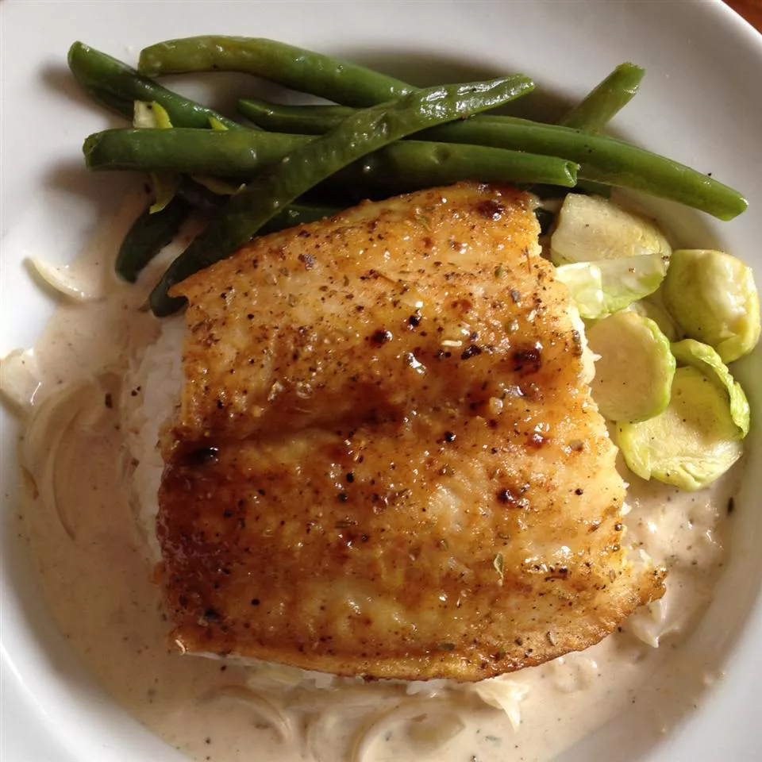

Salmon with Brown Sugar Glaze
Home

Description
This brown sugar salmon recipe with Dijon is my favorite. I make this quick and easy dish way too often. Serve with rice and broccoli.
Ingredients
- cooking spray
- 4 (6 ounce) boneless salmon fillets
- salt and ground black pepper to taste
- ¼ cup packed light brown sugar
- 2 tablespoons Dijon mustard
Steps
- Preheat the oven broiler and set an oven rack about 6 inches from the heat source. Grease the rack of a broiler pan with cooking spray.
- Season salmon with salt and pepper, then place on the prepared broiler pan. Whisk together brown sugar and mustard in a small bowl; spoon mixture evenly over salmon.
- Cook under the preheated broiler until fish flakes easily with a fork, 10 to 15 minutes.
Home